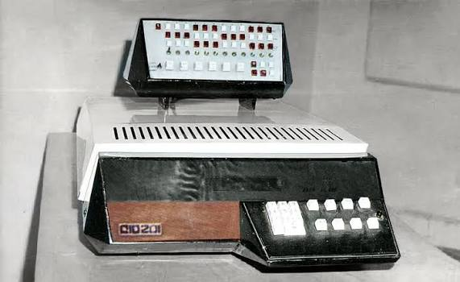
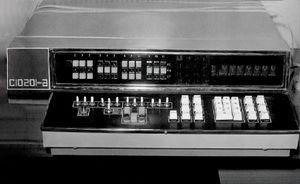
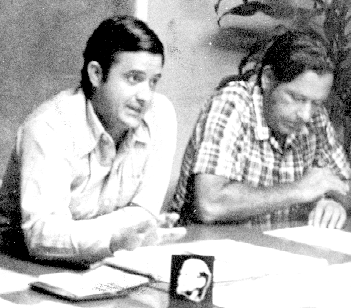
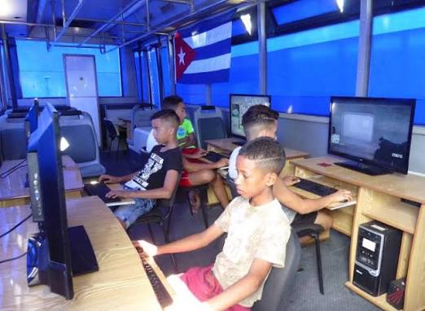

1920
HITO
Título del hito (1920)
Descripción breve del acontecimiento ocurrido en 1920.
Fuente: [1]Fechas clave, personas relevantes, instituciones y logros de la informática cubana.
Descripción breve del acontecimiento ocurrido en 1920.
Fuente: [1]Descripción breve del acontecimiento ocurrido en 1958.
Fuente: [1]Descripción breve del acontecimiento ocurrido en 1962.
Fuente: [2]Se desarrolla la primera minicomputadora cubana, la CID-201, primera de su tipo en el país.
Fuente: [2]
Versión posterior de la CID-201, con mejoras en su arquitectura e interfaz.
Fuente: [2]
Descripción breve del acontecimiento ocurrido en 1987.
Fuente: [3]Descripción breve del acontecimiento ocurrido en 1990.
Fuente: [3]Descripción breve del acontecimiento ocurrido en 1995.
Fuente: [4]Dirigieron el desarrollo de la CID-201, la primera computadora cubana. Ramos fue director del proyecto y Carrasco ingeniero del equipo.
Fuente: [2]
Investigador y documentalista de la historia de la informática en Cuba.
Fuente: [1]Investigador y autor de estudios sobre el desarrollo de la informática cubana.
Fuente: [1]Vinculado a la Universidad de La Habana y al proyecto CID-201.
Fuente: [1]Fundada en 2002, dedicada a la formación de profesionales de la informática y al desarrollo de software.
Fuente: [4]Creado en 2000 para impulsar el desarrollo de la informática y las comunicaciones en Cuba.
Fuente: [3]Fundados en 1987, acercan la informática a la población en todos los municipios del país.
Fuente: [3]
Instituto Nacional de Sistemas Automatizados y Técnicas de Computación.
Fuente: [3]Descripción del logro y su impacto en la sociedad cubana.
Fuente: [4]Descripción del logro y su impacto.
Fuente: [4]Descripción del logro y su impacto.
Fuente: [5]Descripción del logro y su impacto.
Fuente: [5]